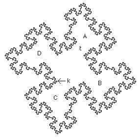
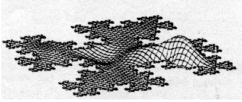

| Sapoval and coworkers have conducted elegant experiments to study the modes of fractal drums. A membrane stretched across the fractal perimeter (the limiting curve for the shape below has dimension Log(8)/Log(4) = 3/2) was excited acoustically and the resulting modes observed by sprinkling powder on the membrane and shining laser light transverse to the surface. Sapoval observed modes localized to bounded regions, A, B, C, and D. In fact, by carefully displacing the acoustic source, Sapoval was able to excite each separately. Familiar drums do not behave this way. Striking any part makes the whole membrane vibrate. Why is the fractal drum so different? |
|  |
| Sapoval showed that the equation governing wave motion has solutions with very large amplitude at the inward-facing corners, such as the point k above. These large amplitude regions generate a cascade of large amplitude vibrations that interfere with one another. This gives rise to dissipation on many scales, so fractal drums exhibit very strong damping. |
| How does this explain the local vibrations of the fractal drum? The narrow throat t slows a wave traveling from A to B, and the strong damping absorbs the wave before it can spread. A simulation of one of these local modes is shown below. |
|  |
| This work led Sapoval to suggest a mechanism responsible for the fractal form of coastlines. |
| In addition, Sapoval has suggested a physiological interpretation of the damping properties of fractal drums. |
| Michel Lapidus and coworkers have performed extensive mathematical analysis of wave patterns on fractal drums. |